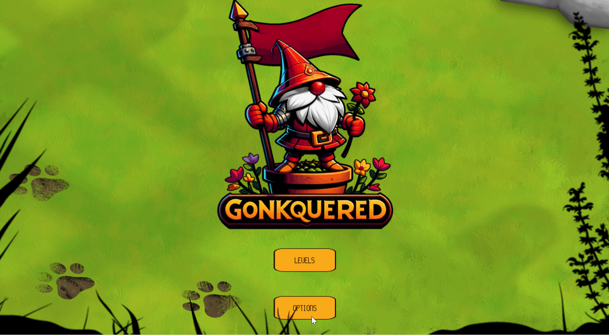

Gonkquered
2024
I created a Mushroom Wars clone as my first skills project in the academy. This project helped me assess how much my C++ skills had developed, while also providing my first experience collaborating with artists to figure out the required assets. This led to plenty of back-and-forth discussions, adjusting asset formats and managing the limitations of their workload and the small pipeline in place.


Key Features
Gameplay: I developed the core game mechanics for the Mushroom Wars clone, where warriors (referred to as "gonks") are generated from buildings. These warriors are used to upgrade buildings for faster warrior production.
The game features:
- Towers with a shooting radius, which can be neutral or owned by a team and upgraded
- Victory conditions where the last team standing wins, with a visible bar showing each team's total warriors
- The ability to send warriors to your own, neutral, or enemy buildings, using them to engage the building's current defenders. You can send a quarter, half, three-quarters, or all of your warriors to an attack.
Additionally, I implemented:
- Sprite animations for upgrading buildings and animating gonk sprites
- Rotating selection rings and arrows for aiming warriors at buildings
Editor: I created an editor for building levels, where users can:
- Drag and drop buildings and towers
- Assign initial teams or set them as neutral
- Set starting warriors and initial building levels
Once the level is designed, it can be saved and played from the menu. The number of teams added determines how many players are needed to play the level.
- Coop: I implemented full support for up to 4 players using either keyboard and mouse. The settings menu allows each player to choose between keyboard or mouse and rebind controls. These settings are saved and can be accessed mid-game, pausing the game. For controller support, I mirrored the original Mushroom Wars controls, which required calculating all the navigational directions for moving between buildings.
Challenges, solutions and lessons learnt
My first challenge was figuring out how to save multiple settings, which I initially tackled using raw binary data. Over time, I learned the advantages of using a more structured format like JSON. Binary formats should be reserved for later optimization in final game builds. This experience also taught me the importance of considering serialization early on, as changing it later proved to be quite painful. Another challenge was managing the many player controls, which required more UX design than I had anticipated. While I eventually achieved the customization and ease of use I was aiming for, it took longer than expected.